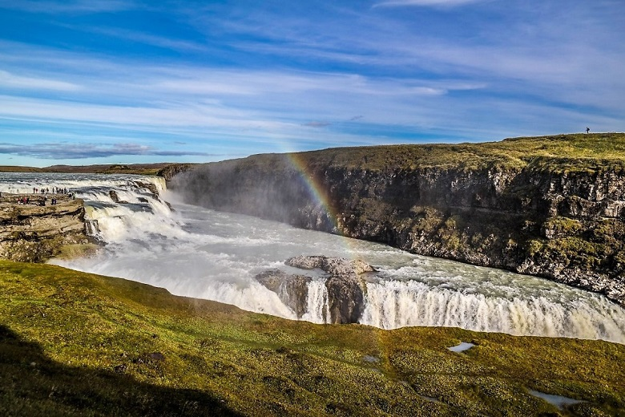
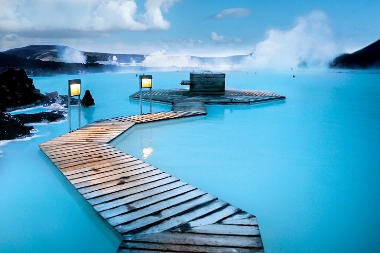
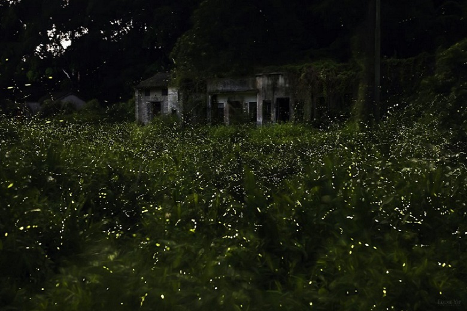

1. 얼음도 잠시 쉬어가는 아이슬란드 
오로라를 보기 위해 많이 찾는 아이슬란드, 하지만 겨울의 아이슬란드는 낮이 짧고,
현지인들의 활동도 위축되어있는 시기이다. 반면 해가 지지 않는 백야 현상이 일어나는 6월의
아이슬란드는 곳곳의 얼음이 녹아 갈 수 있는 곳의 범위가 넓어진다. 한국의 늦가을에서 초겨울 날씨로
아이슬란드의 가장 최적의 날씨를 자랑하는 여름철 아이슬란드로 시원한 휴가를 떠나보자.
물감을 풀어놓은 듯한 푸른빛을 띠고 있는 블루 라군 온천에서 야외 온천을 즐겨보자.
다소 추운 날씨에도 따듯한 미네랄 온천물에 몸을 담그고 있으면 어느새 여행의 피로가
날아가기 때문에 주로 여행의 마지막 코스로 많이 선택하는 블루 라군. 아름다운 물 색깔을
바라보고 있으면 나도 모르게 들어가고 싶은 마음이 생길 만큼 신비로운 공간이다.
기본적으로 고온 다습한 기후를 가지고 있는 말레이시아는 아침, 저녁에는 시원한 편에 속한다.
그중에서도 수도인 쿠알라룸푸르는 서쪽에 위치해있으며 6월은 건기로 비교적 습도가 낮아 여행의 최적기이다.
우기가 시작되기 전에 쿠알라룸푸르를 방문해보자.

여행의 하이라이트라고 할 수 있는 반딧불 투어는 미리 예약 후 방문하기를 추천한다.
나룻배를 타고 세계 최대의 반딧불 서식지를 도는 코스는 여기저기서 감탄사가 나올 만큼 훌륭한 모습을 자랑한다.